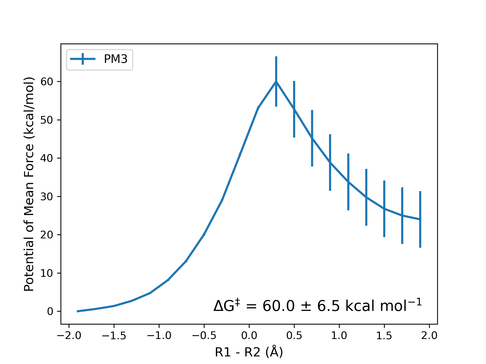

2.3. QM/MM Simulation of the Claisen Rearrangment Reaction#
In this tutorial, we will perform a QM/MM simulation of the claisen rearrangement reaction in Amber.
We will study the reaction under implicit solvent, where all ligand atoms included into the QM region, defined by the PM3 semi-empirical method. Umbrella Sampling will be used to explore the reaction coordinate and MBAR to obtain the free energy profile.
Objectives:
Set up QM/MM Simulations on the Supercomputer (Oscer/Pete)
Prepare a new project folder, “claisen”, and look at directory structure/organization
Use IQmol to model ligand
Generate parameters for the ligand with
antechamber,parmchk2, andtleapPrepare Umbrella Windows
Compute the free energy profile with MBAR
Note
This tutorial requires a supercomputing account!
This example uses Pete
Download my files for reference: claisen.tar.bz2
Fig. 2.3 Trajectory of the claisen rearrangement reaction, allyl vinyl ether is shown in ball-and-stick, and the trajectory was viewed on VMD.#
2.3.1. Use IQmol to Make an allyl_vinyl_ether.pdb#
Use IQmol to make a model of allyl vinyl ether, and save the file as allyl_vinyl_ether.pdb, remember to:
Add hydrogens
Minimize energy
Save as
.pdbDelete all lines except for lines starting with
HETATMThe IQmol PDB has the wrong bonding information.
I saved the filed onto my Desktop. Remember where you saved it! We will copy it later!!!
Fig. 2.4 Using IQmol to make the allyl vinyl ester PDB file.#
2.3.2. Prepare Project Folder on the Cluster#
Login to Pete with ssh:
ssh USERNAME@pete.hpc.okstate.edu # Change `USERNAME` to your username
Go to your /scratch/USERNAME directory, and make the project folder, “claisen”, and in it, make another folder called “pm3”. PME is the semiempirical method we will use to define the QM atoms.
cd /scratch/USERNAME/ # Change `Username` to your username
mkdir -p claisen/pm3 # Make project folder, and method folder
cd claisen/pm3 # Go there
Before moving on, we should talk about file management.
2.3.3. Directories: Flow, Structure, & Organization#
Strongly recommend for a project folder to be organized like this schematic.
The
SYSTEM_DIRcould be whatever biological system you’re working on (i.e., cas9, cas12a, etc.). In this folder, we most investigate the same system using differnt methods, henceMETHOD1_DIRandMETHOD2_DIR.The organization within
METHOD1_DIRandMETHOD2_DIRare generally the same if we are studying the same reaction mechanism with umbrella sampling.Between the first umbrella window (
00/) and the last (NN/), we can have as many windows needed to sample our chosen reaction coorindate (Note: The placeholder0before the0and1.).In each umbrella window, we have an independent simulation.
To structure the directory like this, we will write a bash script, and make an input/ directory containing our reference files.
hematic of Directory Levels:
STEM_DIR/ # Biological system or project name
─ METHOD1_DIR/ # Like METHOD2_DIR but use QM method 1 (or other mutant+METHOD)
─ METHOD2_DIR/ # Like NETHOD1_DIR but use QM method 2 (or other mutant+METHOD)
├── 00/ # First umbrella window
├── 01/ # Second umbrella window
├── … # …
├── NN/ # Up to however many windows needed
│ ├── Trajectories Files # Each window is an independent simulation
├── input/ # Contains input files:
│ ├── PDB/in file # .mdin, .parm7, .rst7, etc.
├── mbar/ # contains scripts for free energy analysis
│ └── *.py, *.ipynb # Python and Jupyter notebooks
├── gen_inputs.in # Script for making umbrella windows
─ └── runmd.slurm # Slurm scripts
Adopted from Dr. Xiaoliang Pan (hehe)
Note
mbar/is the directory for our analysis at the end.gen_inputs.inis the script we will make!runmd.slurmis the Slurm script to submit all the jobs
2.3.4. Reference Files to input/ Directory#
Make the input directory. This is where we will store the PDB files and generate Amber inputs. Go into the folder, and use pwd to print the current working directory. We will copthe the output from pwd for our scp command later.
mkdir input # Make folder
cd input # Go into folder
pwd # Print working directory (Copy this output for scp)
Copy the PDB file of allyl vinyl ether you made (locally with IQmol) into the input folder using scp. This will look different depending where you saved files, but open terminal on your local computer and use scp to upload the file to this directory (copied from pwd):
scp /path/to/allyl_vinyl_ether.pdb USERNAME@pete.hpc.okstate.edu:---PASTE_THE_PWD_HERE---
Before moving on, check if the file transferred correctly. In the Pete terminal window, check if the PDB file is in the input/ folder.
2.3.4.1. Generate Parameters for Allyl Vinyl Ether#
Since this is a simulation of a small molecule, we do not have Amber force field parameters for it.
To make a Amber topology and coordinate file for a small molecule, we need to:
Add hydrogens (We did this with IQmol)
Compute charges with
antechamberWrite parameters with
parmchk2Make topology and coordinate files with
tleap
I prepared the script, generate.slurm, to help with this (ONLY IF YOU’RE ON PETE).
The first few lines are the Slurm directives (#SBATCH) indicating what resources we need. A brief explanation of each line is given after the #.
#!/bin/bash
#SBATCH -p express
#SBATCH -t 00:10:00
#SBATCH --nodes=1
#SBATCH --ntasks-per-node=1
#SBATCH --output=%j.out
#SBATCH --error=%j.err
#SBATCH --job-name=antechamber
date
# Load Amber QMMM. I made a file that ~looks~ cleaner
source /scratch/van/Scripts/pete_setqmmm.sh
# Variable "name" is allyl_vinyl_ether, which is a pain to write, so we should only do it once
name="allyl_vinyl_ether"
# Antechamebr is a program with AmberTools for generating FF parameters.
# parmck2 program figures out what parameters and checks if they're available.
# If not, it tries to make educated guesses, and adds it to .frmod here
antechamber -fi pdb -fo mol2 -i ${name}.pdb -o ${name}.mol2 -c bcc -pf y -nc 0
parmchk2 -i ${name}.mol2 -f mol2 -o ${name}.frcmod
# The "cat <<_EOF > tleap" makes the files tleap containing everything until "_EOF"
cat <<_EOF > tleap.in
source leaprc.gaff
source leaprc.water.tip3p
loadamberparams ${name}.frcmod
ligand = loadmol2 allyl_vinyl_ether.mol2
solvatebox ligand TIP3PBOX 10.0 iso 0.8
saveamberparm ligand step3_pbcsetup.parm7 step3_pbcsetup.rst7
savepdb ligand step3_pbcsetup.pdb
quit
_EOF
# Run tleap in
tleap -sf tleap.in
date
Copy of this script to the inputs/ folder and submit the job to Slurm, it should take about >1 minute.
sbatch generate.slurm
When you ls the directory you should see a few new files:
2.3.4.2. Restraint Files cv.rst#
A restraint file (cv.rst) contains information about the parameters for each umbrella window.
The Amber protein has a lot of different restraints you can try, but for this reaction, we want to keep the bias on the bond breaking and bonding forming.
We need to find the Amber atom numbers involved in the reaction. Load step3_pbcsetup.pdb into IQmol or VMD.
{kind=link}
Fig. 2.5 Open the file, step3_pbcsetup.pdb, you made with tleap. This PDB file is made by amber so the atom numbers also correspond to the topology and cooridnate files.#
Tip
Show atom index: “Display > Atom Labels > Index”
The bond between Carbon atoms 3 and 4 are broken, wheres we see a bond forming between the Oxygen atom (atom 1) and a Carbon atom (atom 6).
To model this reaction in the simplest way possible, we would like to make the reaction coordinate 1-Dimentional!
but we have two bond distances change
A common approch to this is make the reaction coorindinate equal to the difference in distance between the two bonds of interest
where,
\(\mathrm{r}_{\mathrm{bond break}}\) is \(\mathrm{r}_{\mathrm{C - C}}\) which is the bond distancbetween atoms 3 and 4
\(\mathrm{r}_{\mathrm{bond form}}\) is \(\mathrm{r}_{\mathrm{O - C}} \) which is the bond distance between atoms 1 and 6
We know which atoms to to use for our reaction coordinate now. We will take the bond breaking distance - the bond forming distance giving us a distance of about 2 Angstrom.
2.3.4.3. Notation of cv.rst#
Using all of that information, we can make the refernce file for cv.rst. The file looks like this:
# r1 - r2 (CC - CO bond)
&rst
iat=3,4,1,6,
rstwt=1.,-1.,
r1=-99, r2=__REST__, r3=__REST__, r4=99,
rk2=150.0, rk3=150.0,
&end
Each parameter is described by:
# r1 - r2 (CC - CO bond)Just a comment for us to remember what that restraint is! In this case, we are doing restraining the difference between the first distance (r1) and the second distance (r2).iat=3,4,1,6,Atom numbers for the restraint. The first distance (r1) is the length between atoms 3 and 4. The second distance (r2) is the length between atoms 1 and 6.rstwt=1.,-1.,Indicates we want to take the difference between r1 and r2 (r1 -r2)r1=-99, r2=__REST__, r3=__REST__, r4=99,The shape of our biasing potential.__REST__is a placeholder which we will modify later.rk2=150.0, rk3=150.0,Force constant in kcal/mol.
Copy cv.rst file and save it in the input folder.
Important
You do not need to modify!! We will use geninput.in to do it for us!
Generating this file is very important! If you get the indexes wrong, you might run into some simulation problems!
2.3.4.4. QM/MM MD Input files#
We need at leat 2 MD input files. The first file (step5.00_equilibration.mdin) is for simulating the initial pathway, and only runs for a few picoseconds. The second file (step6.00_equilibration.mdin) is will restart from the previous step5.00_equilibration.ncrst for additional 10 ps.
The general format of a QM/MM MD input file differs from classical MD with the &qmmm section.
A NVT simulation for common production-level simulations
&cntrl
imin=0, ! No minimization
irest=1, ! This IS a restart of an old MD simulation
ntx=5, ! So our inpcrd file has velocities
! Boundary conditions
ntb=0, ! Non-Periodic
ntp=0, ! No pressure control
! Temperature control
ntt=3, ! Langevin Dynamics
gamma_ln=5.0, ! Friction coefficient (ps^-1)
temp0=300.0, ! Target temperature
ig=-1, ! Random number seed
! Potential energy control
cut=999.0, ! nonbonded cutoff, in Angstroms
! MD settings
nstlim=500, ! 1 ps total
dt=0.001, ! time step (ps)
! SHAKE
ntc=1, ! Constrain bonds containing hydrogen
ntf=1, ! Do not calculate forces of bonds containing hydrogen
tol=0.000001, ! Shake tolerance
! Control how often information is printed
ntpr=100, ! Print energies every 100 steps
ntwx=100, ! Print coordinates every 100 steps to the trajectory
ntwr=100, ! Print a restart file every 5K steps (can be less frequent)
ntxo=2, ! Write NetCDF format
ioutfm=1, ! Write NetCDF format (always do this!)
! Restraints
nmropt=1, ! Turn on restraints
! QM/MM
ifqnt=1, ! Turn on QM/MM
/
&qmmm
! QM atoms
qmmask=':1' ! Amber residue mask for QM atoms
! QM settings
qm_theory='PM3', ! Semiempirical method
qmcharge=0, ! Charge of QM subsystem
! Shake
qmshake=0, ! Use Shake for QM atoms
! Potential energy control
qmcut=999.0, ! Cutoff for QM/MM electrostatic interactions
writepdb=1, ! Check QM atoms
/
&wt type='DUMPFREQ', istep1=10 /
&wt type='END' /
DISANG=cv.rst
DUMPAVE=step5.00_equilibration.cv
A NVT simulation for common production-level simulations
&cntrl
imin=0, ! No minimization
irest=1, ! This IS a restart of an old MD simulation
ntx=5, ! So our inpcrd file has velocities
! Boundary conditions
ntb=0, ! Non-Periodic
ntp=0, ! No pressure control
! Temperature control
ntt=3, ! Langevin Dynamics
gamma_ln=5.0, ! Friction coefficient (ps^-1)
temp0=300.0, ! Target temperature
ig=-1, ! Random number seed
! Potential energy control
cut=999.0, ! nonbonded cutoff, in Angstroms
! MD settings
nstlim=10000, ! 1 ps total
dt=0.001, ! time step (ps)
! SHAKE
ntc=1, ! Constrain bonds containing hydrogen
ntf=1, ! Do not calculate forces of bonds containing hydrogen
tol=0.000001, ! Shake tolerance
! Control how often information is printed
ntpr=100, ! Print energies every 100 steps
ntwx=100, ! Print coordinates every 100 steps to the trajectory
ntwr=100, ! Print a restart file every 5K steps (can be less frequent)
! ntwv=-1, ! Uncomment to also print velocities to trajectory
! ntwf=-1, ! Uncomment to also print forces to trajectory
ntxo=2, ! Write NetCDF format
ioutfm=1, ! Write NetCDF format (always do this!)
! Restraints
nmropt=1, ! Turn on restraints
! QM/MM
ifqnt=1, ! Turn on QM/MM
/
&ewald
dsum_tol=0.000001,
/
&qmmm
! QM atoms
qmmask=':1'
! QM settings
qm_theory='PM3',
qmcharge=0,
! Shake
qmshake=0, ! Use Shake for QM atoms
! Potential energy control
qmcut=999.0, ! Cutoff for QM/MM electrostatic interactions
writepdb=1, ! Check QM atoms
/
&wt type='DUMPFREQ', istep1=10 /
&wt type='END' /
DISANG=cv.rst
DUMPAVE=step6.00_equilibration.cv
Now we are done with preparing our reference files!
We can start with preparing the umbrella windows!
2.3.5. Automate the Umbrella Windows#
Go back one directory to the pm3/ folder
cd ../ # Return back one directory
pwd # Check where y
The script gen_inputs.in will help you prepare windows for umbrella sampling. This includes the modification in cv.rst file so that each window has a different restraint value.
We will have 21 windows corresponding to restraint values -2.00 to 2.00 Å.
#!/bin/bash
# Section 1
mkdir -p 00
cd 00/
ln -sf ../input/step3_pbcsetup.parm7
ln -sf ../input/step6.00_equilibration.mdin .
sed -e 's/irest=1/irest=0/;s/ntx=5/nts=1,/' ../input/step5.00_equilibration.mdin > step5.00_equilibration.mdin
cd ..
# Section 2
for i in `seq -w 1 20`; do
mkdir -p $i
cd $i
ln -sf ../input/step3_pbcsetup.parm7
ln -sf ../input/step5.00_equilibration.mdin .
ln -sf ../input/step6.00_equilibration .
cd ..
done
# Section 3
cp input/step3_pbcsetup.rst7 00/step5.00_equilibration_inp.rst7
n=-2.0
for i in `seq -f"%02g" 0 20`
do
nn=$(printf "%.2f" "$n")
sed "s/__REST__/${nn}/g" input/cv.rst > ${i}/cv.rst
n=`echo $n + 0.20 | bc`
done
#!/bin/bash
# Section 1
mkdir -p 00
cd 00/
ln -sf ../input/step3_pbcsetup.parm7
ln -sf ../input/step6.00_equilibration.mdin .
sed -e 's/irest=1/irest=0/;s/ntx=5/ntx=1,/' ../input/step5.00_equilibration.mdin > step5.00_equilibration.mdin
cd ..
First, we make the window 00/. I did this outside of section 2, so it is easier to read than adding an if...else statement.
Essentially, since we just made our .parm7 and .rst7 file from tleap, our initial structure does not contain any velocities. So we need to change the options “irest” and “ntx”
ln -sf make a symbolic link pointing to the original file! Do this becuause you do not want too many copies of the same file…
sed does the test transformation for our initial .mdin file.
# Section 2
for i in `seq -w 1 20`; do
mkdir -p $i
cd $i
ln -sf ../input/step3_pbcsetup.parm7
ln -sf ../input/step5.00_equilibration.mdin .
ln -sf ../input/step6.00_equilibration .
cd ..
done
seq -w 1 20 - is just a sequence of number from 1 to 20. The -w flag pads the number with a 0 so all numbers are equal width.
In bash when you wrap a command in backtick (`), you can use the standard output of this command as the input, so this line is saying:
for every NUMBER in NUMBERS (NUMBERS = list from 00, 01,02,03… all the way to 20); do THIS
THIS meaning:
Make a directory for “NUMBER”
Go into the directory, - > “NUMBER”
Make a symbolic link to these files…
leave directory,
done, GO BACK TO BEGINNING OF LOOP AND GET NEXT NUMBER. THEN REPEAT CYCLE UNTIL LIST IS DONE
# Section 3
cp ../input/step3_pbcsetup.rst7 00/step5.00_equilibration_inp.rst7
n=-2.0
for i in `seq -f"%02g" 0 20`
do
nn=$(printf "%.2f" "$n")
sed "s/__REST__/${nn}/g" input/cv.rst > ${i}/cv.rst
n=`echo $n + 0.20 | bc`
done
cp takes the coordinate file we made, step3_pbcsetup.rst7, and make a copy of to window 00/ AND names the file, step5.00_equilibration_inp.rst7. Note this file has _inp.rst7
The last part of section 3 is a loop incrementing the restraint file for each window!
n=-2.0 is for our first restraint value (i.e. window 00/)
The beginning of this for loop is similar to section 2, where were are looping over a list of numbers between 0 and 20.
seq -f"%02g" 0 20 looks different here but it does the same thing as the -w option. I just wanted to show you other approachs.
do is on a new line, but recall that the ; also means new line!
nn=$(printf "%.2f" "$n") says nn is the value of n to two decimal places.
In bash when you want to use the standard output as a variable you can wrap the command in backticks (`) or us the “$(....)” notation. They both do the same thing. *we saw the backticks ealier for the seq command. The command that is being wrapped is just printf, or print format, where the format of $n is a floating point type, and the “.2” says only show the first 2 digits after the point. Example: n=-2.0 then printf make nn=-2.00. Then you use sed to transform __REST__ to nn=-2.00 and output > this file to ${i} which is the UMBRELLA WINDOW. Finally, last line of the loop will add n=-2.00 + 0.20, changing the value of n to n=-1.80 for window 01/.
I hope that wasn’t too bad, you can run the script by typing:
bash gen_inputs.in
Tip
The reason why we renamed the file step3_pbcsetup.rst7 as step5.00_equilibration_inp.rst7 is because this will make our Slurm script easier. If you noticed, now all of our files start with step5.00_equilibration…
TO0000000THE LAST STEP WOOOO!
2.3.6. Running the QM/MM Simulations#
We have 2 files to make.
runqmmm1.slurm- forstep5.00_equilibration.mdinrunqmmm2.slurm- forstep6.00_equilibration.mdin
Submit runqmmm1.slurm to Slurm.
#!/bin/bash
#SBATCH --partition=express
#SBATCH --nodes=1
#SBATCH --ntasks-per-node=16
#SBATCH --output=%j.out
#SBATCH --error=%j.err
#SBATCH --time=00:30:00
#SBATCH --job-name=run1
date
source /scratch/van/Scripts/pete_setqmmm.sh
SANDER="srun -n 16 sander.MPI"
init="step3_pbcsetup"
istep="step5.00_equilibration"
for i in `seq 0 20`; do
printf -v j "%02d" $i
cd $j
$SANDER -O -i ${istep}.mdin -o ${istep}.mdout -p ${init}.parm7 -c ${istep}_inp.rst7 -r ${istep}.ncrst -x ${istep}.nc -inf ${istep}.mdinfo
printf -v j "%02d" $(($i + 1))
cp ${istep}.ncrst ../${j}/${istep}_inp.ncrst
cd ..
done
date
READ ME
for i in seq 0 20; do - We’re looping over number of windows!
printf -v j "%02d" $i - pads the number (add a 0 in front) and the -v flag makes this a new variable $j
cd $j Go into the directory $j ( which is the same as “0${i}/” if i is a single-digit number)
SANDER RUNNNNNNNNNNDNDNNDNDNDNDNGABNJKREFNDGLAN MD
printf -v j "%02d" $(($i + 1)) has 2 things happening:
STEP 1.
$(($i + 1))adds 1 to what$iisSTEP 2.
printf -v j "%02d"STEP 1. is print formt to a padded zero if single digit and make this variable “$j”
The last thing we do is use then coordintates from this run as the initial coorindates for the next window! Leave go to the next window, and REPEATTTTTTTT
#!/bin/bash
#SBATCH --partition=express
#SBATCH --nodes=1
#SBATCH --ntasks-per-node=16
#SBATCH --output=%j.out
#SBATCH --error=%j.err
#SBATCH --time=00:30:00
#SBATCH --job-name=run2
date
source /scratch/van/Scripts/pete_setqmmm.sh
SANDER="srun -n 16 sander.MPI"
init="step3_pbcsetup"
pstep="step5.00_equilibration"
istep="step6.00_equilibration"
for i in `seq -w 0 20`; do
cd $i
$SANDER -O -i ${istep}.mdin -o ${istep}.mdout -p ${init}.parm7 -c ${pstep}.ncrst -r ${istep}.ncrst -x ${istep}.nc -inf ${istep}.mdinfo
cd ..
done
date
READ ME
A lot more simple that runqmmm1.slurm. Normally, I DO NOT use a loop to cover every window. I would use Slurm arrays and have each window be submitted as its own job. But since this is a really small system. it will finish in the express node.
Important
step5.00_equilibration.mdin
The first step where we need generate the intial pathway will take a lot of time…
2.3.7. Visualize the Trajectories#
Prep some stuff from vmd here or converting
2.3.8. Free Energy Profile with MBAR#
Warning
I do not know if this works on Windows, so try this on pete first!
To do this part, you need to:
Install the
mbarenvironment to Conda on Pete. Copy the two scripts in mentioned here to aScripts/folder.
For this analysis, I copy the mbar.ipynb to the project’s mbar/ folder
The mbar.ipynb noteboook looks like this, in the refernce file, you can see a pdf file containing th the output from my analysis
import sys
import numpy as np
from scipy import stats
import matplotlib.pyplot as plt
from matplotlib.ticker import AutoMinorLocator, LogLocator, NullFormatter
from glob import glob
from sklearn.utils import resample
import pymbar
sys.path.append("/Users/van/Scripts/")
from mbar_pmf import mbar_pmf
n_windows = 21
val_kn = []
for i in range(n_windows):
fnames = sorted(glob('../%02d/step6.0?_equilibration.cv' % i))
arrays = [np.loadtxt(f, usecols=1)[::] for f in fnames[:]]
val_kn.append(np.concatenate(arrays))
val0_k = np.linspace(-2.00, 2.00, n_windows)
K_k = np.ones(n_windows) * 300.0
val_min = -2.00
val_max = 2.00
nbins = n_windows - 1
for i in range(n_windows):
print("Window %02d:" % i, pymbar.timeseries.subsampleCorrelatedData(val_kn[i], conservative=True))
mbar = mbar_pmf(val_kn, val0_k, K_k, 300.0)
bin_centers, f_i, df_i, reweighting_entropy = mbar.get_pmf(val_min, val_max, nbins)
bin_centers, f_i, df_i, reweighting_entropy = mbar.get_pmf(val_min, val_max, nbins, uncertainties='from-specified', pmf_reference=f_i[:20].argmin())
np.savetxt("freefile_mbar", np.column_stack((bin_centers, f_i, df_i)))
initial = np.loadtxt('freefile_mbar' )
bar=float(np.round(initial[:,1].max() - initial[:10,1].min(),1))
err=float(np.round(initial[initial[:,1].argmax()][2],1))
plt.errorbar(initial[:,0], initial[:,1] - initial[:10,1].min(), yerr=initial[:,2], linewidth=2, label="PM3")
plt.text(-0.4, 0,'$\Delta$G$^\ddag$ = %s $\pm$ %s kcal mol$^{-1}$' % (bar, err), fontsize=14)
plt.xlabel("R1 - R2 (Å)", fontsize=12)
plt.ylabel("Potential of Mean Force (kcal/mol)", fontsize=12)
plt.legend(loc=2, fontsize=11)
plt.savefig("claisen_pmf.png", dpi=300)
plt.show()
